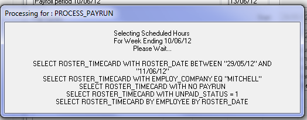

Home > Helpdesk

Tutorial
We have had a number of instances where payruns fall short of the number of people needing to be paid. This short note explains what needs to be done to reset the data, so that a normal payrun can be completed. |
|
Introduction
Generally payroll processing is flawless and then after a payrun cancellation or re-run, the total number of payslips falls short of what is known to be the correct number.
Looking through the program logic which selects rosters for payrun, we have the below:

which indicates the fields that are used to select rosters for processing.
- WITH NO PAYRUN - means that the shift is not in another payrun, which can happen when users run multiple pays.
- WITH UNPAID_STATUS = 1 - indicating that the shift is yet unpaid.
Step 1
What we have found is that the 'cancel payrun' process resets the payrun flag, however, when errors occur, the unpaid_status is not reset to 1.
And, hence a re-run of the payrun fails to pick up the shifts which you would otherwise expect.
Summary
To correct this issues, requires technical support to manually reset the flags as there are no programs provided to end users to massage the data outside of the context of a program (e.g. payroll processing).
Use batch_change to reset the unpaid_satus to 1 & rerun fixes the issue.
Top of Page
See Also
 PowerForce Controls PowerForce Controls
|